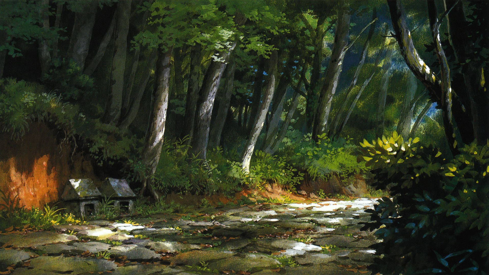

Has cruzado un túnel extraño y ahora estás en un mundo donde los espíritus caminan entre humanos.  El inicio de tu aventura Entrar al bosque Ir a la casa de baños Tomar el tren misterioso Inicio de la aventura